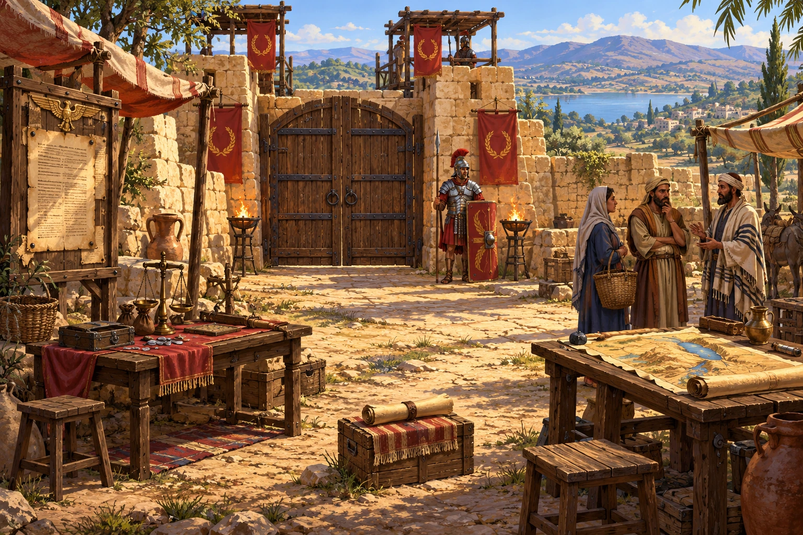
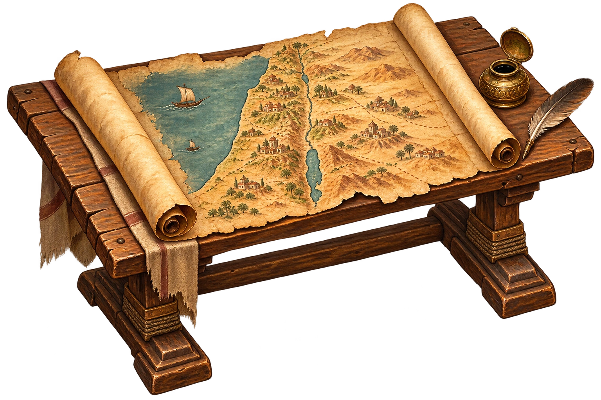

Ein römischer Kontrollposten versperrt euch den Weg nach Galiläa. Öffnet alle fünf Siegel und zeigt, dass ihr die Situation der Menschen unter römischer Herrschaft verstanden habt.


FÜR NEUGIERIGE, DIE SCHON FERTIG SIND
Ein Bild ist durcheinandergeraten!
Alle Siegel sind offen. Setzt den Kontrollposten im freiwilligen Schiebepuzzle wieder zusammen.